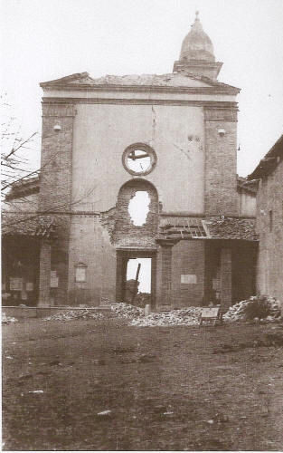
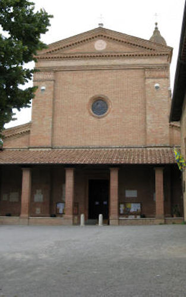
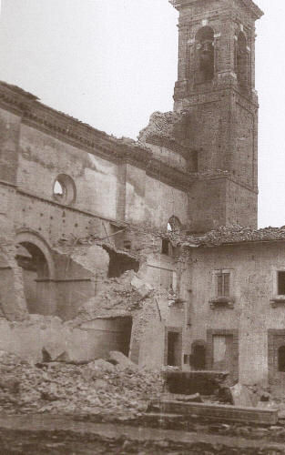
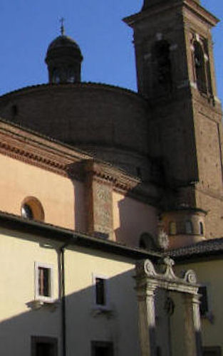
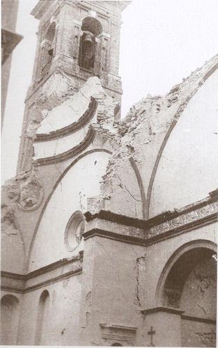
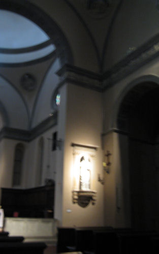
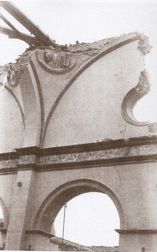
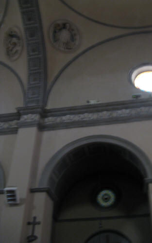

La prima sciagura che si abbatte sulla Capriola (luogo dove sorge la Basilica) è uno degli atti finali di quelle guerre che nella prima metà del cinquecento mettono tutti contro tutti nella Penisola e la sottopongono alle continue invasioni di armi straniere. Nel 1554-55 la guerra di Siena, combattuta dalle truppe senesi appoggiate dai francesi di Biagio di Montluc contro gli imperiali spagnoli e le truppe di Cosimo I dei Medici guidate dal duca di Marignano, insanguina con continui scontri il contado senese, in zone sempre più prossime alla città, fino a diventare un assedio. Intorno alle mura è un susseguirsi di scontri e di costruzioni rapidissime di fortini nelle zone di volta in volta occupate, tramite la manodopera coatta dei contadini del luogo. La Capriola è occupata alternativamente dai due contendenti. Saranno gli spagnoli a trasformarla in una specie di luogo fortificato nelle parti verso la città e ad attrarre così sulle sue mura le cannonnate senesi dal prato di S. Francesco.
In mezzo a tanta violenza, saranno accolti nel convento le 400 bocche disutili (tra cui i gittatelli del S. Maria) che il Montluc espellerà dalla città assediata e ormai affamata. Terminata la guerra di Siena con la fine della repubblica senese, non si può procedere che ai più urgenti restauri delle distruzioni portate dai cannoni e dall’occupazione delle soldatesche. I frati non possono più usufruire della vicinanza del Comune senese e della venerazione per i luoghi bernardiniani. Delibere e finanziamenti dipendono dall’autorità granducale, mentre anche l’ambiente culturale senese si mostra meno sensibile alle necessità.
Nel 1575, la chiesa ed il convento mantengono comunque ancora il loro aspetto dell’inizio del secolo. Una grande stagione di restauri inizia solo negli anni trenta del seicento. Si tratta all’inizio di restauri sulle singole parti che formano ancora, nella pianta redatta a metà secolo da Fabio Chigi (il futuro Alessandro VII) e conservata negli archivi romani della nobile famiglia, la struttura cinquecentesca a quattro chiostri (quello di Pandolfo, i due antichi bernardiniani e quello cinquecentesco dell’infermeria).
Di pari passo con i restauri, la nuova sensibilità barocca porta da un lato l’inserimento di ornamenti interni (stucchi e trasformazione degli altari), le modifiche alle rifiniture e la sostituzione di pale e tele quattro-cinquecentesche, con conseguente stravolgimento dell’atmosfera rinascimentale nella chiesa; dall’altro, com’è tipico della ricerca architettonica del periodo, l’intuizione di nuove definizioni di spazi e di originali rapporti tra luoghi aperti e strutture murarie.
Sotto la guida di Celso Maria Billò, francescano di gran prestigio intellettuale all’interno dell’Ordine, si concepisce così la nuova pianta a tre chiostri, con la definitiva distruzione dei luoghi originari bernardiniani (i due chiostri antichi) e l’apertura del più grande chiostro centrale, che, mentre fisicamente separa con un notevole spazio aperto e senza colonnato le due grandi aggiunte cinquecentesche (la loggia di Pandolfo e il chiostro di fra Timoteo), ricompatta le varie strutture conventuali disposte in eccessiva lunghezza e ne fa l’intorno del nuovo grande piazzale. Ai lati maggiori di questo vengono aperti ad ovest un lungo corridoio che dà accesso a tutti i locali da quella parte; sul lato della chiesa uno stretto e lungo passaggio che dalla nuova porta del convento (l’attuale) porta fino alla sagrestia e di lì al convento.
Nello stesso tempo, al chiostro di Pandolfo viene tolto il lato verso Siena, mentre i bracci laterali vengono assorbiti nei corpi di fabbricato adiacente (l’uno diviene la stretta aula dell’odierno museo “Castelli” e l’altro corrisponde alle cucine del refettorio settecentesco). Nasce così, per sottrazione, l’attuale loggia “di Pandolfo”, buona interpretazione barocca della sistemazione cozzarelliana, per il bellissimo sguardo che consente su Siena. Scompare l’aula capitolare utilizzata in parte come disimpegno tra presbiterio, sagrestia, scale della cripta e del piano superiore e convento, in parte come base del campanile che si va ricostruendo e ampliando. Dalla nuova sistemazione della loggia di Pandolfo si accederà al nuovo refettorio, che verrà terminato nel 1704, una volta risolti vari problemi tecnici di consolidamento delle fondazioni, al fine di sorreggere al piano soprastante altri locali tra cui la nuova biblioteca.
La storia del nostro monumento nell’ottocento è invece segnata dalle due soppressioni. La prima ebbe luogo nel 1810 per effetto di leggi napoleoniche. Tutta la parte conventuale, ad eccezione degli annessi alla chiesa e di quanto riconosciuto come canonica (essendo già l’Osservanza una sede parrocchiale) viene confiscato come proprietà di un Ordine soppresso. Per cinque anni uno speculatore guadagna sui locali affittati a civili e in parte adibiti a fabbrica di salnitro. I frati possono tornarvi nel 1815 e operare i necessari restauri.
Nel 1866, invece, il convento è vittima di una legge del Regno d’Italia per la soppressione degli istituti religiosi. Nel 1874, dopo che alcune parti erano già state consegnate ad alcuni frati come locatari privati, P. Aurelio Castelli riesce ad ottenere la proprietà del convento facendo partecipare un emissario civile dei frati all’asta prevista dalla legge per i beni confiscati.
All’inizio del novecento, l’Osservanza mostra quindi l’aspetto assunto nei primi anni del settecento, con il convento riordinato come si diceva e la chiesa fortemente barocchizzata negli interni e in qualche particolare esterno. Dagli altari (compreso quello maggiore) sono scomparse le opere d’arte quattro-cinquecentesche, sia per effetto del gusto secentesco, sia a causa delle due confische. Negli anni venti si inizia un doveroso quanto coraggioso ripristino delle forme e degli ornamenti rinascimentali, con l’eliminazione dall’interno degli stucchi e dalla facciata delle pesanti costruzioni che ne avevano abolito la classicheggiante essenzialità. Incalza però l’ultima e più grave catastrofe: due bombardamenti aerei, il 23 gennaio e il 14 aprile 1944, si accaniscono sulla Capriola.
Della chiesa rimangono in piedi alcune strutture murarie laterali, mentre tetto, pavimento e cripta sono un ammasso di macerie tra le quali si confondono i frammenti delle preziose terrecotte. Il convento rimane danneggiato ai piani superiori e nei muri perimetrali. La ricostruzione inizia nel primo dopoguerra e si fonda sul criterio di restaurare la chiesa cinquecentesca nell’eleganza martiniana. I lavori, iniziati nel 1945, si concludono in pochi anni: nel 1949 la chiesa può essere riconsacrata. L’architetto Egisto Bellini, coadiuvato da tecnici e artigiani di valore certo superiore alla loro fama, e la volontà popolare e cittadina di veder risorgere il profilo della Capriola, ci riconsegnano il monumento nella forma che ci accingiamo ad ammirare.
COME ERA DOPO IL BOMBARDAMENTO E COME E' ADESSO:










 ACCADDE OGGI
ACCADDE OGGI